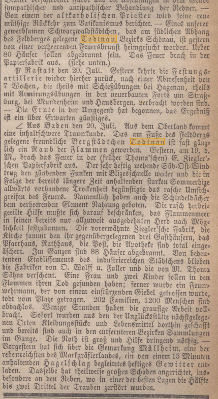

ORIGINALAUSSCHNITT · QUELLENPRÜFUNG
Was die Zeitung wirklich berichtet
Der Zeitungsausschnitt aus der Schwäbischen Kronik, Nr. 172 vom 22. Juli 1876, dokumentiert die unmittelbaren Folgen des Stadtbrandes.

Im Ausschnitt lesbar
- Ort: Todtnau; Datum des Brandes: 19. Juli 1876
- Ausbruch in der Ziegler’schen Papierfabrik
- 88 abgebrannte Häuser
- 202 Familien und rund 1'200 Obdachlose
- Hinweise auf Hilfeleistungen und die vom Feuer verschonten Fabriken
Zur Einordnung der Quelle
Die im Archivdatenblatt vorkommende Uhrzeit 19 Uhr ist im gezeigten Zeitungsausschnitt nicht als Brandbeginn nachweisbar. Hanser nennt für den Ausbruch gegen 12 Uhr.
Quellennachweis: Schwäbische Kronik, Nr. 172, 22. Juli 1876, Archiv HG-SBT-Z-0005.
Bildrechte: Vor einer öffentlichen Verwendung des Zeitungsscans sind die Nutzungsbedingungen des Digitalisats zu prüfen.
Quellenkritische Hinweise
Archivdatenblätter sind Recherchehilfen. Bei Abweichungen zwischen einer Zusammenfassung und dem Originaltext ist der Originaltext massgeblich. Der zeitnahe Bericht von Pfarrer Scherer wird gesondert mit seinem Originalscan verglichen, bevor wir Uhrzeiten gegenüberstellen.